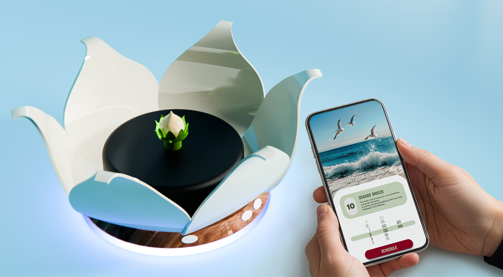
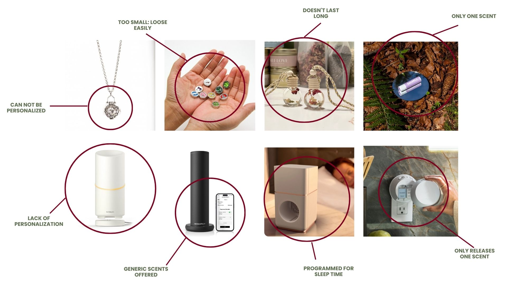
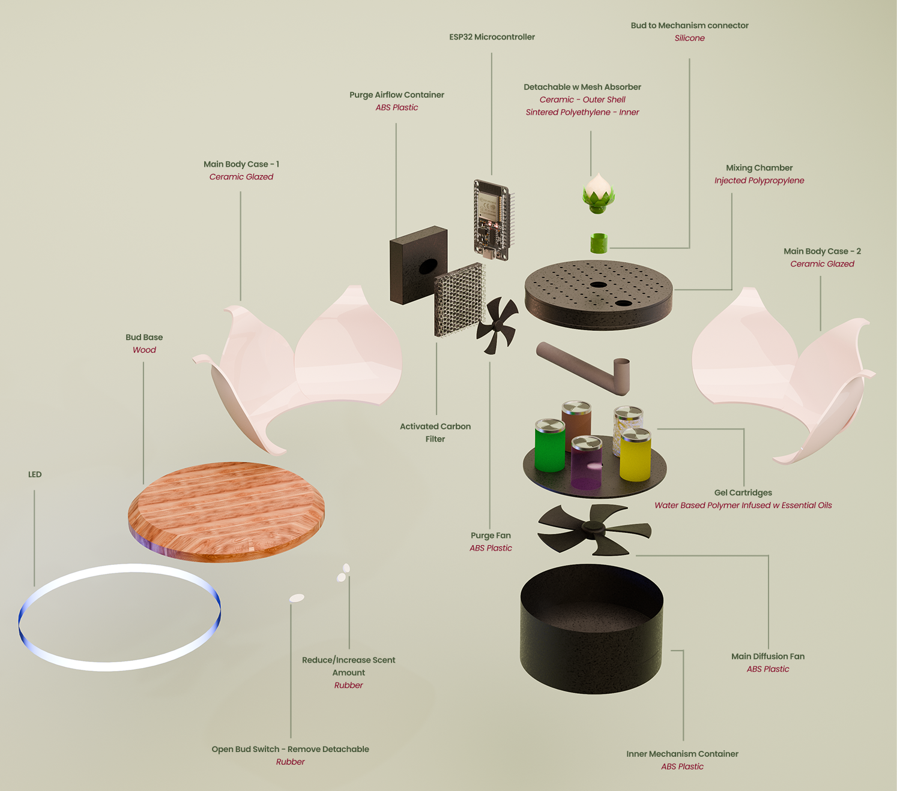
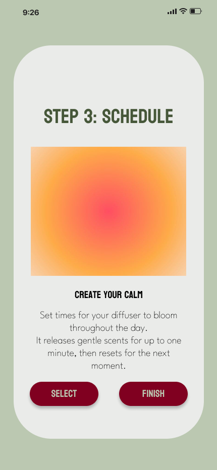
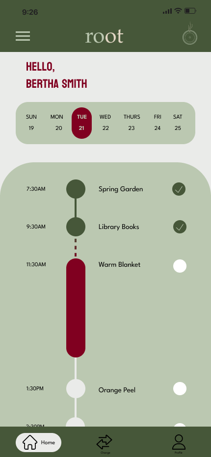
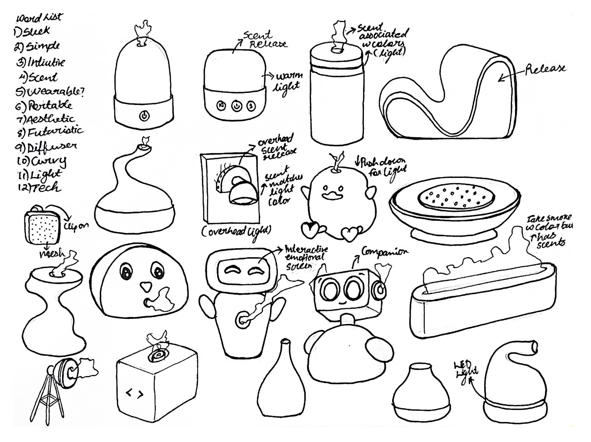
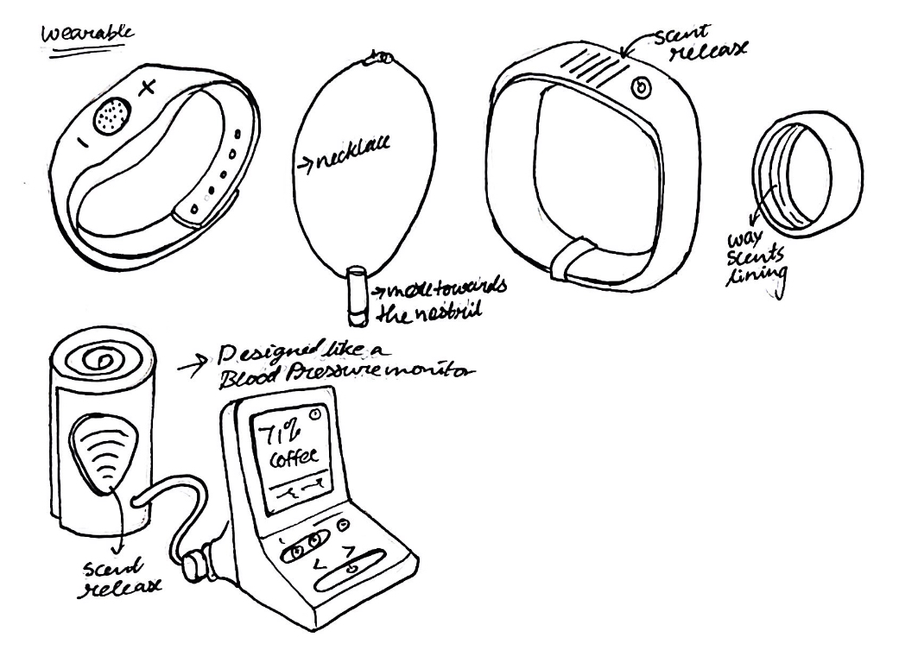
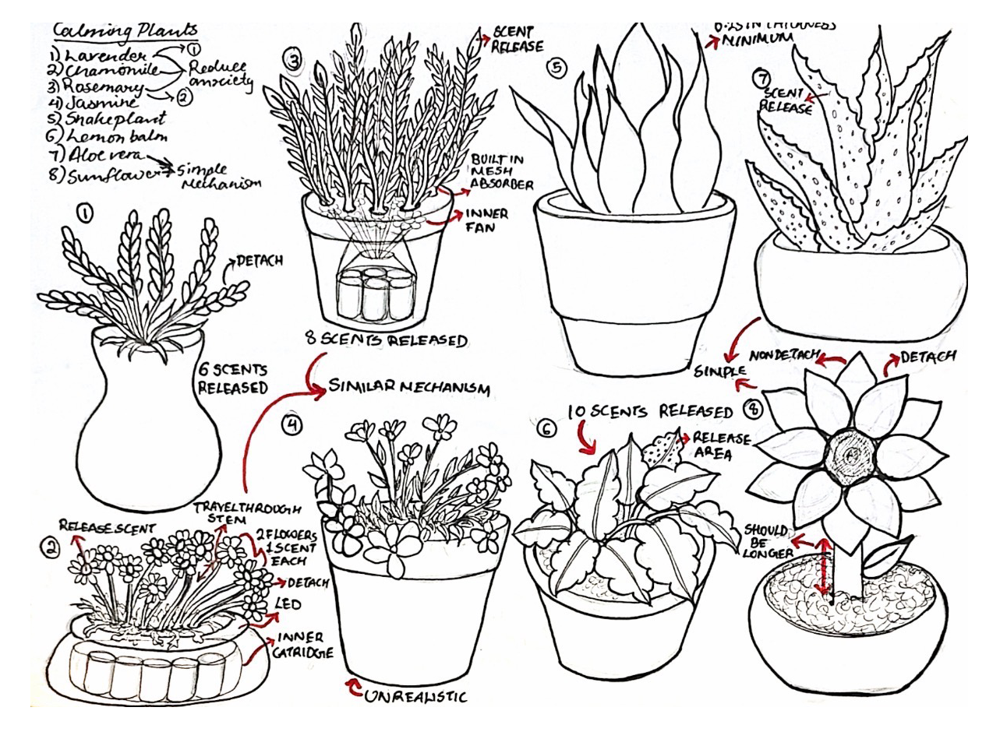
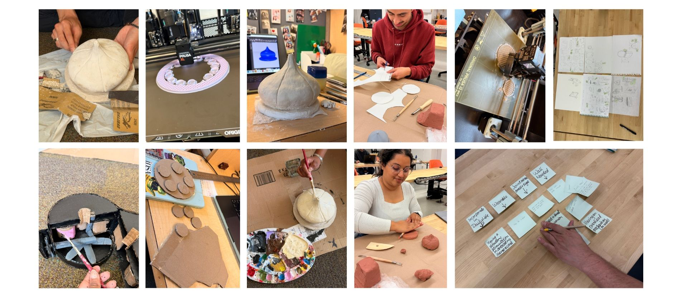

What if aroma could bring back
lost memories?
How might we design a home care device that uses olfactory stimulation to reduce anxiety and support memory retention in early-stage Alzheimer’s patients?

How might we design a home care device that uses olfactory stimulation to reduce anxiety and support memory retention in early-stage Alzheimer’s patients?
About 1 in 9 people over 65 has Alzheimer’s disease. By 2025, approximately 55 million people worldwide are living with it — a number expected to reach 155 million by 2050. There is no cure.
“Even though we’re far apart, I want him to feel like I’m right there with him.”
Bertha Smith — user personaExisting care tools focus on what’s lost. Root focuses on what’s still there: emotional memory, sensory response, and the deeply personal link between smell and self.

Root diffuser active in a home environment
The olfactory bulb has a direct neural pathway to the hippocampus and amygdala — the brain regions responsible for memory formation and emotional response. Unlike visual or auditory cues, smell bypasses the thalamus entirely, making it uniquely powerful for patients whose other memory pathways have weakened.

Overview
Hippocampus weakens. Short-term working memory fades. Recent events become inaccessible.
Cortex stores episodic memory. Older, practiced memories — especially emotional ones — survive far longer.
The amygdala endures. Feelings outlast details. Familiar scents can resurface emotional memories directly.
The olfactory bulb has a direct link to memory centres. Smell and music are the most powerful recall triggers.
Alzheimer’s progression — four stages and where Root intervenes
Bertha is an 80-year-old retired teacher living in San Francisco. She spent her life gardening, teaching children, and enjoying the beach. Since developing early Alzheimer’s, she sometimes feels disoriented and anxious when her environment changes. She finds comfort in sensory cues — soft light, warmth, and anything that reminds her of life and her memories.

“Traditional memory aids like alarms or notes feel cold and impersonal.”
Bertha — pain point synthesisA daily routine that reinforces memory and independence through familiar sensory experiences.
Preserve her sense of identity through familiar experiences. Enjoy peaceful moments of comfort.
Becomes anxious when she forgets where she is. Strong artificial scents confuse or irritate her.
Complicated controls, digital screens that are too flashy, and sudden unexpected noises.
We surveyed the olfactory and memory therapy product landscape. Every existing solution had critical limitations: too small and easy to lose, only one scent, no personalisation, or designed purely for general wellness rather than therapeutic memory support.

Existing product analysis — key gaps identified
Wearable scent lockets and portable inhalers are impractical for patients with memory impairment who regularly misplace items.
Generic diffusers and plug-in products offer a single fragrance with no ability to personalise to a patient’s specific memory associations.
Smart diffusers like Aromatech are designed for ambience, not memory therapy. They lack scheduling tied to personal memory profiles.
Root is a smart olfactory diffuser and companion app designed for Alzheimer’s patients and their caregivers. It uses personalised scent profiles scheduled through a mobile app to gently stimulate memory recall during overnight sleep — the time when olfactory enrichment is most effective.
Set scent memories in the app
Caregivers or family members map specific scents to personal memories — grandmother’s garden, the sea, Sunday baking — through the companion app.
Program overnight diffusion
Scent release is timed to overnight windows when olfactory enrichment shows greatest memory improvement. The device runs silently and automatically.
Gel cartridges blend custom scents
Up to 5 gel cartridges (citrus, floral, herbal, woody, vanilla) mix in the internal chamber. The detachable lotus bud can be worn or carried during the day.
Track response and adjust
Caregivers track which scents prompted calm or recall. The app surfaces patterns over time and suggests adjustments to the memory profile.
Root was designed to feel like a beautiful object, not a medical device. The lotus-inspired form opens when active, closes when dormant. A warm wood base with LED ring provides ambient light cues without screens or complexity.

Exploded view — all components
Detailed mechanical sketch — scent airflow and mixing mechanism
IoT connection diagram — device to app ecosystem
The companion app was designed for caregivers and family members, not the patient. Bertha never needs to interact with a screen. The app allows scheduling, memory profile building, and response tracking — all in a calm, low-jargon interface.
View companion app prototypeHover over each screen to see the flow in motion

Onboarding

Selecting Scents

Scheduling

Tracking
The team began with secondary research into home care devices, Alzheimer’s progression, and olfactory science before moving into ideation. Every design decision was grounded in Bertha’s specific needs: no complex controls, no digital screens for the patient, nothing cold or clinical.

Initial ideation sketches - Standalone

Initial ideation sketches - Wearable

Mechanical detail - Plant form

Team photos of ideation, prototyping, and research
I built two physical prototype iterations, each testing a different aspects of the form. Moving from rough proof-of-concept to a refined model changed how we understood the device.

First physical model made with clay and cardboard established the core form language.

This high-fidelity prototype represented the intended final form of Root. Through 3D printing and finishing, I was able to evaluate the product's proportions, visual language, and emotional presence within the home.
Root was designed to disappear into any home environment — a kitchen counter, a bedside table, a living room. Beautiful enough to belong. Quiet enough to go unnoticed.


A day with Root isn’t marked by a medical intervention or a reminder of what’s been lost. It’s marked by a quiet moment of recognition — the smell of the sea, the garden, something familiar that feels like home.
Storyboard — a day in Bertha’s life with Root
Bertha can’t tell us what she needs. Everything had to be inferred from research, caregiver interviews, and behavioural observation. That’s a different kind of empathy than working with users who can articulate their pain.
A screen can be updated. A physical form is permanent. Every material, mechanism, and proportion decision felt more consequential than any UI choice I’ve made.
The companion app isn’t for Bertha — it’s for her daughter. Designing for an intermediary user who experiences the product emotionally, not just functionally, was a new challenge.
The +226% stat from UC Irvine didn’t just validate the concept — it shaped the product. Overnight scheduling, passive diffusion, and the bud for daytime use all came directly from the research findings.
Bertha dislikes cold and clinical. Making Root beautiful wasn’t aesthetic indulgence — it was a design requirement. An object that belongs in a home reduces the stigma and anxiety of needing care.